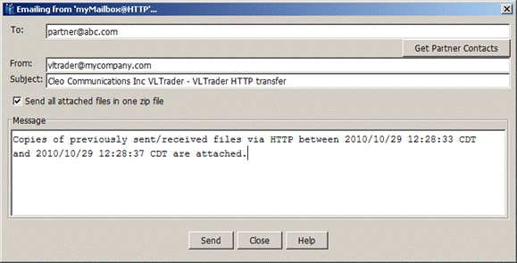

Note: Email Copy is only available under the following conditions:
- Configure>Options >Transfers>Transfer Logging is set to
Database.
- For remote hosts, the sentbox and receivedbox are configured.
- For local users hosts, the archive sentbox and receivedbox are configured.
- Configure>Options>Other>Disable Date/Time Portion of Filenames in
Sent/Received Box is unchecked (off).
For one or more send or receive transfers, when Email Copy... is
selected, the following dialog will be displayed.

Complete the following information on the screen:
- In the To: field enter the email address of your trading partner.
If the associated host is associated with a Trading Partner (see Trading Partner Management) and the
Trading Partner has Technical contacts, then a Get Partner Contacts
button will be displayed. Selecting this button will fill the To:
field with all the associated Technical contacts. Multiple valid email addresses may be
specified, separated by colons, semi-colons, or commas.
- The From: field's default value is taken from the 'System
Administrator Email Address' defined in the Other tab of
Configure System Options. If this field contains multiple email
addresses, only the first address is used. See System.
- Update the Subject: field as needed. It defaults to a string
consisting of the license owner, product, and transport.
- Choose the Send all attached files in one zip file option if you
wish to compress the size of the data emailed or if your trading partner's email client has
difficulty receiving your files due to certain file extensions.
- Update the Message area as needed. It defaults to a descriptive
message identifying the transport and time-date range.
- After entering the needed information, click Send. The selected
files will be located within the sentbox/receivedbox, optionally zipped into an archive, and
then emailed. After the email has been successfully sent, you a dialog indicating success
is displayed.
If there were any warnings or errors that were identified during emailing, you will receive
notification of this as well.